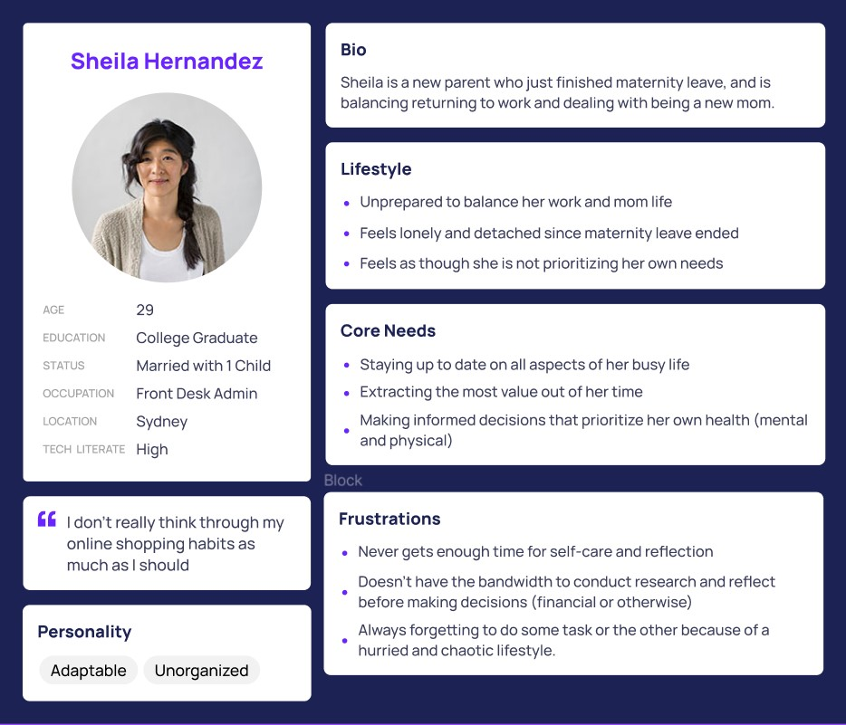
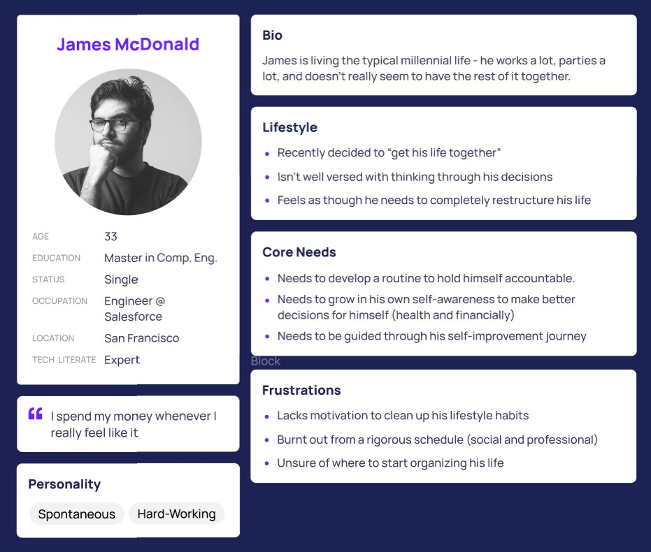
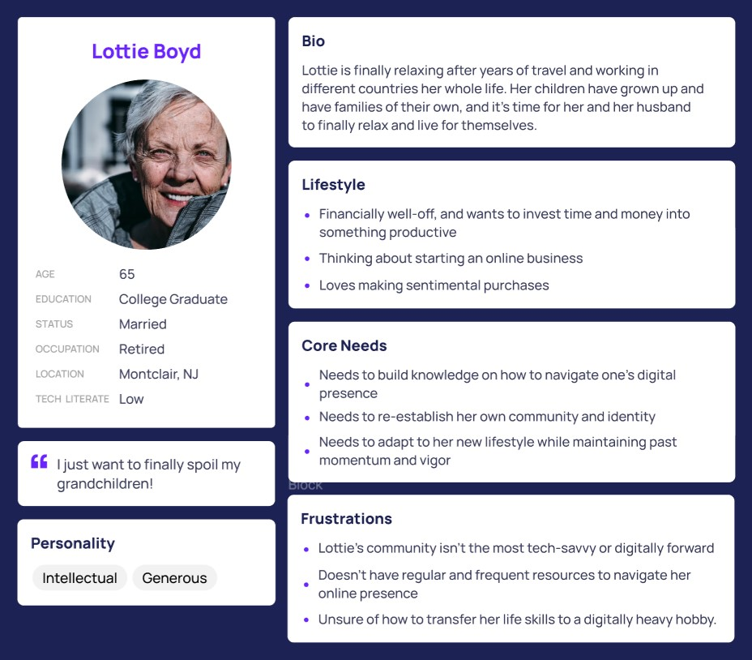

We conducted user interviews to eight
individuals,
with at least one person from
each segment/lifestyle category.
This priliminary analysis was to perform a more accurate data analysis on the spending habits and
analytics of what product categories these indivdiuals tend to buy most from. A link to the spreadsheet
with the anonymous responses for each individual can be found
here.
Questions we asked were segmented around four areas:
Key:
Brown Highlight: Segmenting Takeaways
Pink Highlight: Key User Tasks/Behaviors
Red Highlight: Pain Points
Green Highlight: Wishes and Desires
Orange Highlight: Unexpected Behaviors
Group 1: Quality of Time Spent on Amazon
- When you use Amazon, are you mindful of the amount of time you are spending on the site?
Key Insights
There were two observable key learnings in regards to quality of time spent on
Amazon. Either
users utilize Amazon exactly when they need it and spend no more than 20-30 minutes on the site, or
they are users who tend to browse through the site. Browsing seemed to be a crucial task that was a
part of many user journeys. It is noticed that it’s easy to get lost while browsing
where
oftentimes, users will go to an online site with a specific goal, but get lost due to the noise and
product competition within the site.
Group 2: Spending Habits on Amazon
- Do you find yourself overspending on Amazon? Why do you think that is?
- Are there specific seasons during the year you find yourself overspending on Amazon?
- How easy does Amazon make it to spend your money?
- Do you believe you are more likely to overspend when shopping in-person, or online? Why do
you
think so?
Key Insights
The key learnings in regards to spending habits and budgeting of our interviewees is that
typically, users who are more mindful and intentional about their time spent on Amazon also tend to
spend less on the site, and vice versa. Amazon leverages the variety of products they have on their
site to promote upselling and product stacking, which leads to overspending.
Generally, holidays, birthdays, and the like (seasons of giving) appear to be periods in which users
admit to overspending, regardless of user segment. Browsing seems to be a critical task during these
seasons - most users claim to be less intentional about their time spent browsing because they turn
to Amazon to inspire gift-giving ideas.
Another key learning is that most users tend to overspend when shopping online than in-person. This
can be motivated by the pandemic, in which more people converted to being an online shopper. With
the user interface, the design makes it easy and efficient to filter through products (by rating or
price) and most of a user’s personal credit information is saved, so it is more casual to buy more
items and not keep track of spending. Most subjects claimed that spending online leads to a
detachment between the user and money, making it more likely to overspend. With recommendations
provided on Amazon that tend to prompt users to look at more expensive products, rather than better
deals/value, Amazon makes it incredibly easy to motivate users to buy more items. Amazon also has a
very straightforward system to make it easy for users to make purchases by allowing multiple payment
options, and with one swipe on a phone/desktop interface it leads to a direct purchase. The option
to purchase is at every single step of the user journey, which further adds to the ease and
convenience factor of online shopping.
Product competition and continuous recommendations prompt users to be more inclined to make a
purchase by promoting exposure of various products to users. One finding from the user research is
that users who spend more time on Amazon tend to use the wishlist feature more, which promotes
further spending because a lack of spending at one point can still point to a future purchase.
Overall, users who spent more time on Amazon were more likely to say that they overspent online, and
vice versa.
Group 3: Product Categories on Amazon
- Do you find yourself shopping more for wants or needs on Amazon? Why do you think that is?
- What kinds of product categories do you think you buy most of off of Amazon. Are there any
product categories you usually stray away from?
Key Insights
Through asking questions on product categories we found that users focused more on needs and
daily supplies rather than wants on a regular basis. However during holiday/gift giving seasons,
Amazon is used to drive inspiration of gifts and presents, but is often used more for inspiration
and idea building rather than actual purchase. Users tend to stay away from clothing as the quality
is not guaranteed from small brands or unknown retailers. They were more driven to buy specific
items, especially electronics, during off season/promotion season as the quality is guaranteed from
name brands. Finally, we found that users who spend more time on amazon are more likely to shop for
wants and vice versa
Group 4: Sentiment on Money Management Tools
- Do you use any tools to manage your budget? If so what is your favorite feature?
- Would a integrated budget tool in a online shopping website make you want to use their
service
more often?
- Would you use a money tracking or budgeting tool on Amazon?
- If you could wave a magic wand and develop a money tracking tool on Amazon, what information
would you like to see through it?
Key Insights
For the questions regarding how users manage their budget, most users declared that they do not
currently utilize money management tools. Rather, if they do, it is largely through their bank or
individual Excel sheets. One user in particular stated, “I do not like to set a budget because it
psychologically primes me to actually spend the budget that I set. Instead, I try to keep track of
how often I spend and try to spend a little less than the month before,” which brings up an
interesting point as users generally claimed they didn’t realize how much they don’t track their
Amazon spending until they were asked in the interview.
Users who did not spend much time on Amazon claimed that having a money tracking tool on Amazon
would not affect their time spent on Amazon. However, frequent Amazon users claimed that having a
tool would actually increase their time spent on the app as they would feel more intentional and
less guilty about the time they spend browsing.
If a money tracking tool existed, users want to make sure that tool was customizable according to
their own needs - they do not want Amazon telling them how to spend. Those who claim they tend to
overspend online are more inclined to have positive sentiment and demand for a money tracking tool
as they tend to “splurge” more often. Users want to be able to set and customize a budget if a tool
were to exist. Multiple subjects wanted a block on spending once that budget was reached.
Specifically, users want to see how much they are saving each month. Typically, users are more
motivated by positive reinforcement when it comes to restricting spending. Users want to see
responsive, intelligent recommendations that are not simply geared towards more expensive products,
but rather tailored to their budget and spending needs. Dynamic recommendations were also desired,
for instance incorporating a filtering system that allows users to better personalize their
management system according to financial status, income, expenditures, etc.
Those who said they would use the money management tool also specifically stated they would use
Amazon even more if the service was available which is significant because smart spending can mean
more spending in the long run.



.jpg)


-min.png)